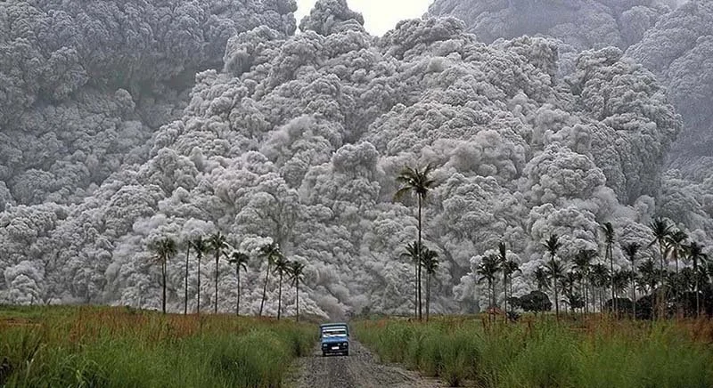
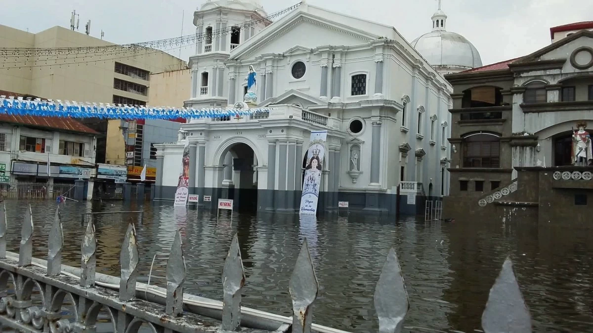
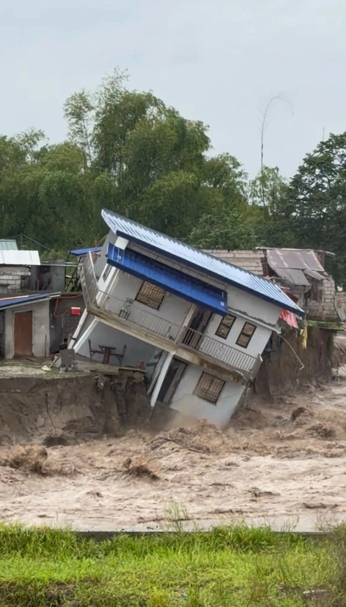
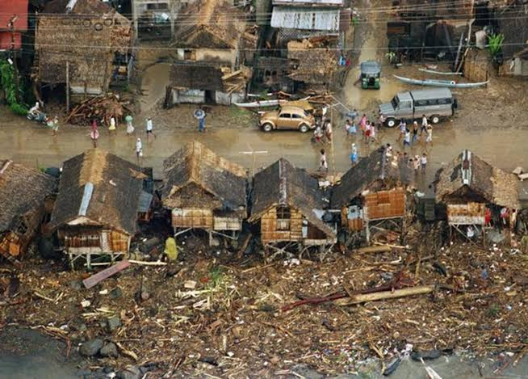
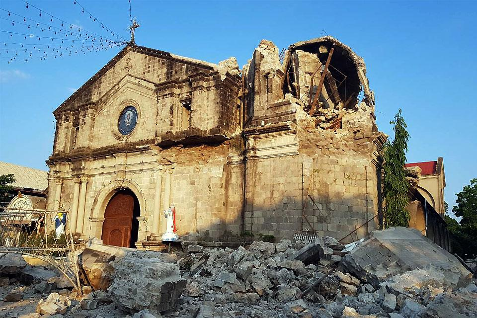

Great Luzon Flood
July to August 1972
Calamities In Philippines
-In the design I will be showing different calamities that occurred in the history of the Philippines. In this design I will be showing the natural disasters such as typhoons, floods, and, volcanic eruptions and other catastrophes. It will show the year they occurred and other important information.
Learn More


July to August 1972
June 15, 1991

November 15, 1991

April 22, 2019
Timeline
1972-1991
1972-1991 caused a devastating 6,334 deaths in total because of these calamities.
2019-Current
Earthquakes and habagat made the life of the kapampangan hard and challenged.
President
Ferdinand E. Marcos
Term: 1965–1986
President
Corazon C. Aquino
Term: 1986–1992
President
Rodrigo Duterte
Term:June 30, 2016 – June 30, 2022Term: 2016–2022